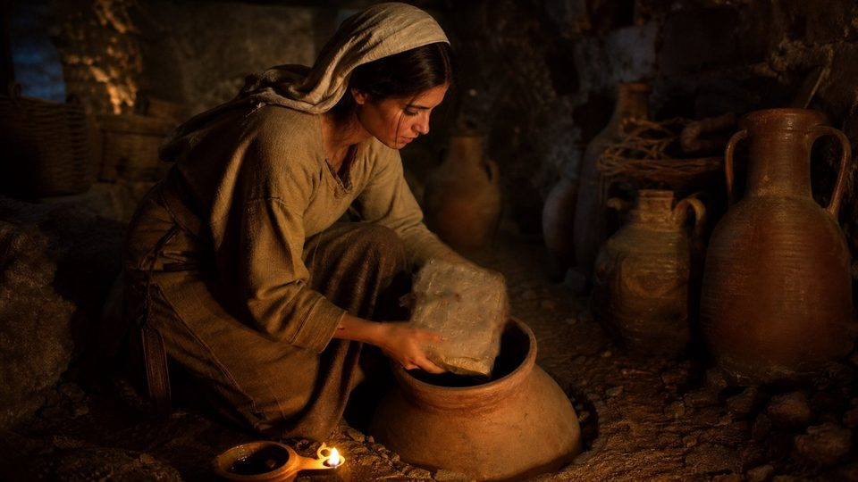
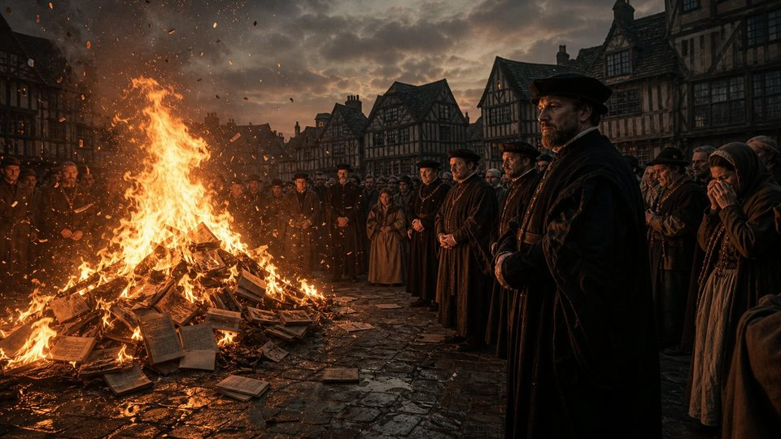
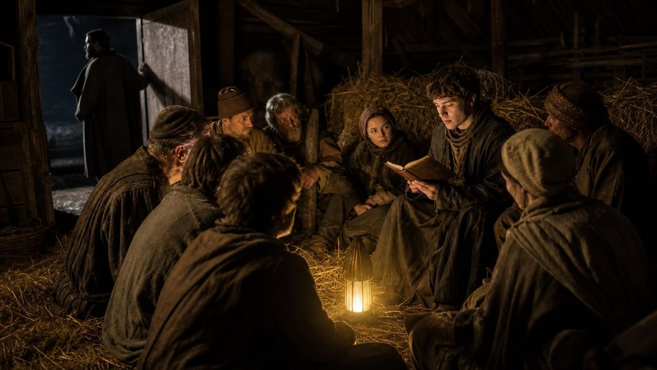
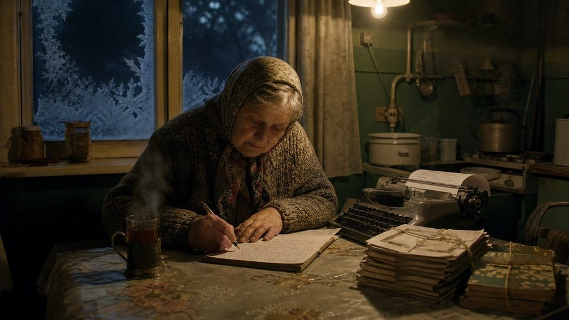

Le Livre indestructible
303 ap. J.-C. – XXᵉ siècle
De l'édit de Dioclétien aux Bibles recopiées à la main en URSS : un livre que rien n'a pu effacer.
« Livrées au feu sur les places publiques »
Pour la première fois, un empereur ne s'attaque pas seulement aux chrétiens, mais à leur livre. L'objectif de Dioclétien est clair : faire disparaître les Écritures.
Le 23 février 303, jour de la fête romaine des Terminalia, les soldats de Dioclétien forcent les portes de la grande salle de réunion des chrétiens de Nicomédie, sa capitale, dans l'actuelle Turquie. Selon l'écrivain Lactance, témoin des faits, ils y cherchent d'abord les livres, qu'ils brûlent, avant de raser le bâtiment. Dès le lendemain, un édit est affiché dans tout l'Empire : les lieux de culte doivent être détruits et les Écritures remises aux autorités pour être brûlées.
C'est le début de la « Grande Persécution », la plus violente de l'histoire romaine. Elle ne prendra fin qu'en 311-313.
« Nous avons vu de nos propres yeux les maisons de prière renversées de fond en comble, et les divines et saintes Écritures livrées au feu au milieu des places publiques. »
Eusèbe de Césarée, Histoire ecclésiastique, VIII, 2, 1 (traduction française)

Cirta, 19 mai 303 : le procès-verbal d'une saisie
Extraits des actes officiels · traduits en français
- Félix, curateur de la cité« Apportez les Écritures de la loi, et tout ce que vous avez ici, comme il a été ordonné, afin d'obéir à l'édit. »
- Paul, évêque« Les Écritures, ce sont les lecteurs qui les ont. Nous, nous vous donnons ce que nous avons ici. »
- Félix« Montrez-nous les lecteurs, ou envoyez quelqu'un les chercher. »
- Paul« Vous les connaissez tous. »
- Le greffierOn se rend ensuite chez les lecteurs, maison après maison. L'un d'eux remet quatre volumes, un autre cinq, un autre huit…
Le document original, en latin, a été lu en 320 lors d'un procès devant le gouverneur Zénophile ; c'est pourquoi on l'appelle les « Actes de Zénophile ».
À Cirta, l'actuelle Constantine en Algérie, le greffier note tout. L'évêque Paul livre la vaisselle et les vêtements, mais pas les livres : « ce sont les lecteurs qui les ont ». Les magistrats doivent aller les chercher de maison en maison.
Ceux qui livrent les Écritures reçoivent un surnom infamant : les traditores, en latin « ceux qui ont livré ». Le mot a donné le français « traître ». D'autres refusent. En Afrique, Félix, évêque de Thibiuca, répond qu'il préfère mourir plutôt que de remettre les livres ; il est exécuté le 15 juillet 303.

Moins de trente ans plus tard
L'empereur Constantin écrit à Eusèbe de Césarée pour lui commander cinquante exemplaires des Écritures « sur parchemin, lisibles et faciles à transporter », destinés aux églises de Constantinople. Les livres que Rome voulait brûler sont désormais recopiés aux frais de l'empereur. La persécution n'a laissé aucune trace dans le texte : les manuscrits antérieurs et postérieurs à 303 transmettent les mêmes livres.
Eusèbe, Vie de Constantin, IV, 36.
William Tyndale, traduire au prix du feu
Il voulait qu'un garçon de ferme connaisse les Écritures mieux qu'un savant. Pour cela, il a traduit le Nouveau Testament du grec en anglais, et l'a payé de sa vie.
Trois ans plus tard · 1539
The Byble in Englyshe
In the begynnynge was the worde, and the worde was wyth God: and God was the worde. The same was in the begynnynge wyth God. All thinges were made by it, and wythout it was made nothynge that was made. In it was lyfe, and the lyfe was the lyght of men, and the lyght shyneth in darcknes, and the darcknes comprehended it not.
La « Grande Bible », imprimée par ordre du roi Henri VIII pour toutes les églises d'Angleterre. Son Nouveau Testament reprend pour l'essentiel la traduction de Tyndale.
Traduction française du passage (Jean 1:1-5)
In the begynnynge was that worde, and that worde was with god: and god was thatt worde. The same was in the begynnynge wyth god. All thynges were made by it, and with out it, was made nothinge, that was made. In it was lyfe, and lyfe was the lyght of men, and the lyght shyneth in the darcknes, and the darcknes comprehended it not.
« Au commencement était la Parole, et la Parole était avec Dieu, et la Parole était Dieu. Elle était au commencement avec Dieu. Toutes choses ont été faites par elle, et sans elle rien de ce qui a été fait n'a été fait. En elle était la vie, et la vie était la lumière des hommes ; la lumière brille dans les ténèbres, et les ténèbres ne l'ont pas saisie. »
Orthographe anglaise du XVIᵉ siècle, conservée telle quelle. Canonique
- 1526Interdit d'imprimer en Angleterre, Tyndale fait paraître à Worms le premier Nouveau Testament anglais imprimé, traduit directement du grec. Les exemplaires gagnent l'Angleterre en secret.
- Oct. 1526L'évêque de Londres, Cuthbert Tunstall, fait brûler les exemplaires saisis devant la cathédrale Saint-Paul. Selon le chroniqueur Edward Hall, il rachètera même, en 1529, des lots entiers pour les détruire, finançant sans le vouloir une édition corrigée.
- 1535Trahi par un faux ami, Tyndale est arrêté à Anvers et enfermé au château de Vilvorde, près de Bruxelles.
- 6 oct. 1536Il est étranglé, puis son corps est brûlé. Selon le martyrologe de John Foxe, ses dernières paroles furent une prière : « Ouvre les yeux du roi d'Angleterre ! »
- 1539La Grande Bible, en anglais, est imprimée par ordre du roi Henri VIII pour toutes les églises du pays. Son Nouveau Testament est, pour l'essentiel, celui de Tyndale.
- 1611La Bible du roi Jacques reprend plus des trois quarts des mots du Nouveau Testament de Tyndale.

Lettre de Tyndale depuis sa prison · hiver 1535 · écrite en latin
« Je vous demande […] une chandelle pour le soir, car il est bien pénible de rester seul dans l'obscurité. Mais surtout, je supplie votre bonté […] de me permettre d'avoir la Bible hébraïque, la grammaire hébraïque et le dictionnaire hébreu, afin que je puisse passer le temps à cette étude. »
Traduction française. L'original, en latin, conservé dans les archives belges, est l'unique lettre autographe de Tyndale connue.

Lire la transcription
Nicomédie, février de l'an trois cent trois. L'empereur Dioclétien fait afficher un édit : les lieux de réunion des chrétiens seront rasés, et leurs Écritures livrées aux flammes. L'historien Eusèbe de Césarée écrit qu'il a vu, de ses propres yeux, les saintes Écritures brûler au milieu des places publiques. En Afrique, à Cirta, les magistrats fouillent maison après maison pour saisir les livres. Certains les livrent. D'autres les cachent, au péril de leur vie. Moins de trente ans plus tard, l'empereur Constantin commande cinquante exemplaires des Écritures pour les églises de sa nouvelle capitale. Le livre que l'on voulait effacer est recopié avec un soin nouveau.
Londres, octobre 1526. Devant la cathédrale Saint-Paul, l'évêque Cuthbert Tunstall fait brûler des Nouveaux Testaments en anglais, imprimés à Worms et entrés en secret dans le royaume. Leur traducteur, William Tyndale, est traqué. Arrêté à Anvers, enfermé au château de Vilvorde, il réclame dans une lettre sa Bible hébraïque, sa grammaire et son dictionnaire, pour continuer à traduire. Le 6 octobre 1536, il est étranglé, puis brûlé. Trois ans plus tard, une Bible anglaise, en grande partie son œuvre, est imprimée par ordre du roi pour toutes les églises d'Angleterre. Le feu a détruit des exemplaires. Il n'a pas détruit le texte.
Six interdictions, six échecs
Conciles, rois, inquisiteurs, reines et dictateurs ont voulu empêcher le peuple de lire la Bible. Retournez chaque carte pour découvrir ce qui a suivi.

Derrière le rideau de fer, la Bible en contrebande
Le XXᵉ siècle voit naître des États qui veulent effacer toute foi. Jamais la Bible n'a été aussi pourchassée, ni aussi recopiée, cachée et transportée.

Union soviétique. Les Bibles sont rares, chères et surveillées. Des croyants les recopient à la main ou à la machine à écrire, avec des feuilles de papier carbone, sur le modèle du samizdat, mot russe qui signifie « auto-édition ».
Albanie. En 1967, tous les lieux de culte sont fermés ; la Constitution de 1976 fait du pays le premier État officiellement athée du monde.
Chine. Pendant la Révolution culturelle (1966-1976), des Bibles sont confisquées et brûlées en public.
Frère André. En 1955, le Néerlandais Andrew van der Bijl se rend en Pologne. Commence alors une vie de passages de frontières, la voiture chargée de Bibles. Son livre Le Contrebandier de Dieu (1967) fera le tour du monde.

Le projet Perle : un million de Bibles en une nuit
Une barge chargée de 232 tonnes de Bibles en chinois, tirée par le remorqueur Michael parti des Philippines, approche d'une plage du sud de la Chine. Une vingtaine de volontaires l'accompagnent. Sur la plage, des centaines de croyants chinois attendent dans le noir. En deux heures, un million de Bibles, emballées dans du plastique, sont débarquées et emportées. Les croyants les appelleront les « Bibles de l'eau ».
Les routes clandestines de la Bible
Choisissez une route pour la tracer sur la carte.
-
Imprimés à Worms, les petits volumes passent par les ports flamands, dissimulés parmi des marchandises, puis sont vendus sous le manteau à Londres.
-
Imprimée à Bâle, la Bible de Casiodoro de Reina est introduite clandestinement en Espagne, où l'Inquisition la recherche et la détruit.
-
Pendant 26 ans d'interdiction, des exemplaires de la Bible malgache sont cachés, recopiés et lus en secret sur les hauts plateaux.
-
Le Néerlandais Andrew van der Bijl, « Frère André », se rend en Pologne en 1955. C'est le début de décennies de voyages pour faire passer des Bibles derrière le rideau de fer.
-
En URSS, des croyants recopient la Bible à la main ou à la machine à écrire, avec plusieurs feuilles de papier carbone, et se transmettent les cahiers.
-
Dans le seul pays officiellement athée du monde, des familles gardent une Bible enterrée ou emmurée pendant près d'un quart de siècle.
-
Une barge de 232 tonnes de Bibles, tirée par le remorqueur Michael, rejoint de nuit une plage près de Shantou : un million de Bibles en chinois débarquées en quelques heures.
Lire la transcription
Pendant des siècles, des pouvoirs ont tenté d'empêcher la lecture de la Bible dans la langue du peuple. En Angleterre, en 1408, les constitutions d'Oxford interdisent toute traduction anglaise non autorisée. Pourtant, plus de deux cent cinquante manuscrits de la Bible de Wycliffe nous sont parvenus. À Madagascar, la reine Ranavalona interdit le christianisme en 1835, l'année même où s'achève l'impression de la Bible malgache. Pendant vingt-six ans, des croyants cachent leurs exemplaires et les lisent en secret, parfois au fond des grottes. Quand l'interdiction est levée, en 1861, la Bible est toujours là.
Au XXᵉ siècle, en Union soviétique, des croyants recopient la Bible à la main ou à la machine à écrire, page après page, pendant des nuits entières. En Albanie, l'État se proclame athée. En Chine, pendant la Révolution culturelle, des Bibles sont brûlées en public. Puis, dans la nuit du 18 juin 1981, sur une plage proche de Shantou, des centaines de croyants chinois tirent des vagues un million de Bibles, en une seule nuit. Aujourd'hui, la Bible est le livre le plus diffusé de l'histoire, traduite en entier dans plus de huit cents langues. « L'herbe se dessèche, la fleur se fane, mais la parole de notre Dieu subsiste pour toujours. »
Vrai ou légende ?
L'histoire de la Bible n'a pas besoin d'être embellie. Certaines anecdotes, répétées depuis plus d'un siècle, sont pourtant fausses. Saurez-vous les repérer ?
-
Affirmation 1 / 6
Voltaire aurait prédit que, cent ans après lui, la Bible serait un livre oublié ; et sa maison serait ensuite devenue un dépôt de Bibles.
Légende
Aucune phrase de ce genre n'a été retrouvée dans les écrits de Voltaire. Theodore Besterman, directeur de l'Institut et Musée Voltaire de Genève, affirmait qu'aucune de ses maisons n'a jamais été liée à une société biblique. L'histoire, répandue au début du XXᵉ siècle, provient sans doute d'une mauvaise lecture d'un rapport de 1849. Seule nuance : un récit anglais de 1836 évoque des Bibles entreposées un temps aux Délices, ancienne demeure du philosophe.
-
Affirmation 2 / 6
Dioclétien aurait fait graver une colonne proclamant le nom des chrétiens « effacé » pour toujours.
Légende
L'inscription latine « nomine christianorum deleto », « le nom des chrétiens ayant été effacé », n'est connue que par des recueils de la Renaissance. Aucun original n'a jamais été vu, et les épigraphistes la classent parmi les inscriptions fausses. L'édit de 303, lui, est bien réel.
-
Affirmation 3 / 6
En 331 environ, l'empereur Constantin commande 50 exemplaires des Écritures.
Vrai
Eusèbe de Césarée cite la lettre de l'empereur : 50 exemplaires sur parchemin, lisibles et faciles à transporter, pour les églises de Constantinople (Vie de Constantin, IV, 36). Certains chercheurs se sont demandé si les codex Vaticanus et Sinaïticus en sont proches ; c'est une simple hypothèse.
-
Affirmation 4 / 6
Il ne reste que trois exemplaires du Nouveau Testament de Tyndale imprimé à Worms en 1526.
Vrai
Sur plusieurs milliers d'exemplaires imprimés, trois seulement sont connus : celui de la British Library à Londres (il lui manque la page de titre), celui de la Bibliothèque régionale de Stuttgart, le seul complet, identifié en 1996, et un exemplaire très incomplet à la bibliothèque de la cathédrale Saint-Paul de Londres.
-
Affirmation 5 / 6
Les os de John Wycliffe ont été brûlés 44 ans après sa mort.
Vrai
Mort en 1384, Wycliffe est exhumé en 1428 à Lutterworth sur ordre du pape Martin V, en application d'une décision du concile de Constance. Ses restes sont brûlés et ses cendres jetées dans la rivière Swift.
-
Affirmation 6 / 6
Un million de Bibles ont été débarquées en une seule nuit sur une plage de Chine.
Vrai
C'est le « projet Perle », dans la nuit du 18 juin 1981, près de Shantou. Les croyants chinois les ont appelées les « Bibles de l'eau ». Une partie des colis fut saisie par les autorités, mais une grande partie fut distribuée dans tout le pays.
Le livre le plus diffusé de l'histoire
Ceux qui voulaient la faire disparaître ont échoué. Voici où en est la Bible aujourd'hui, selon l'Alliance biblique universelle.
Sources : Alliance biblique universelle, rapport de distribution 2025 ; Wycliffe, statistiques de septembre 2026. Le total des Bibles imprimées depuis le XVᵉ siècle n'est qu'une estimation.
יָבֵשׁ חָצִיר נָבֵל צִיץ וּדְבַר־אֱלֹהֵינוּ יָקוּם לְעוֹלָם׃
« L'herbe se dessèche, la fleur se fane, mais la parole de notre Dieu subsiste pour toujours. »
Ésaïe 40:8 · hébreu · Canonique
ὁ οὐρανὸς καὶ ἡ γῆ παρελεύσεται, οἱ δὲ λόγοι μου οὐ μὴ παρέλθωσιν.
« Le ciel et la terre passeront, mais mes paroles ne passeront jamais. »
Matthieu 24:35 · grec · Canonique
3 500 ans d'un seul regard
De Moïse au Codex H, en passant par Qumrân, Gutenberg et les bûchers : la dernière salle rassemble toute la transmission sur une grande frise interactive.
Salle 11 · La Grande Frise chronologique